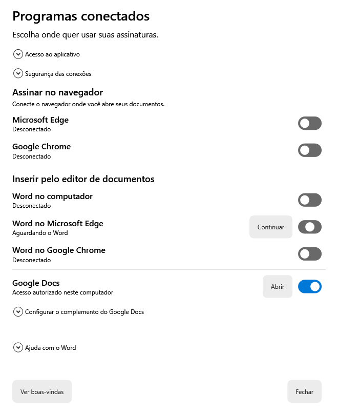

Signature Factory
Ajuda do aplicativo.
Os primeiros passos para usar a prévia 0.8.9 no Windows 11 de 64 bits.
Como obter o aplicativo
A distribuição está prevista pela Microsoft Store, em compra única. A ficha da loja ainda não foi publicada. Este site apresenta o aplicativo e oferece documentação e suporte.
Assine seu primeiro PDF
- Em Criar assinatura, adicione uma imagem ou um PDF, clique em Gerar e confira o resultado.
- Digite um nome em Salvar como e clique em Salvar.
- Em Minhas assinaturas, escolha o nome e abra Assinar PDF. Selecione o PDF, a página e a posição.
- Redimensione pelo canto e use Salvar cópia assinada. Abra a cópia para conferir.
Conecte o editor
Abra Configurações → Programas conectados. Acione o controle do programa desejado e siga as orientações da tela. Se o navegador ou editor solicitar uma confirmação, termine essa etapa e volte ao aplicativo para conferir o estado.
Na prévia, as lojas públicas ainda estão pendentes. A extensão e os complementos são configurados pelos passos de desenvolvimento indicados no aplicativo e no guia do kit. Para usar apenas um PDF local, basta abrir o arquivo pelo aplicativo.

Dúvidas comuns
Onde estão as assinaturas que salvei?
Abra Minhas assinaturas na mesma conta do Windows usada para salvá-las. Use a busca pelo início do nome e marque a estrela para destacar as favoritas.
Como desconecto um programa?
Volte a Configurações → Programas conectados e desligue o controle correspondente. Para remover também uma extensão instalada, abra o gerenciador de extensões do navegador. As permissões que você concedeu ao Google ou à Microsoft podem ser administradas na respectiva conta.
O que faço se a assinatura não aparecer no editor?
Mantenha o aplicativo aberto, confira o estado da conexão e confirme que o documento permite edição. No Google Docs, você também pode escolher uma assinatura na extensão e usar Ctrl+V no ponto desejado.
Como verifico a instalação?
Abra Verificar instalação no aplicativo ou pelo menu Iniciar e execute as verificações. O relatório pode ser salvo para revisão. Se pedir ajuda, informe a versão do aplicativo e a mensagem de erro e use apenas documentos fictícios para ilustrar.
Suporte do projeto
O canal escolhido é o GitHub Issues. Os chamados são públicos e exigem uma conta GitHub. Ao descrever o problema, informe a versão e a mensagem de erro. Use exemplos fictícios. Nunca publique documentos pessoais, imagens de assinaturas ou seu PIN.
O canal externo será disponibilizado após a publicação do repositório. Enquanto isso, as instruções e as dúvidas comuns desta página estão disponíveis.